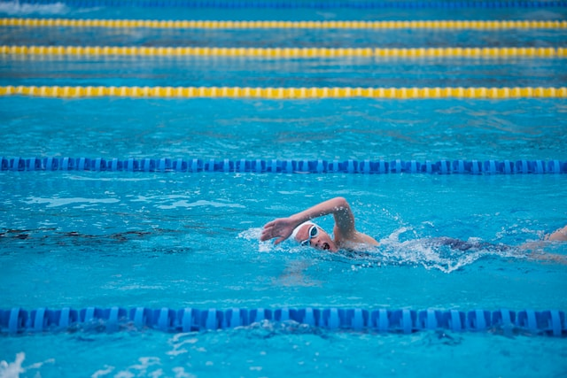

뒤로가기
배영
LET'S SWIMMING! 수영을 배워보자!
수영
자유형
배영
평영
접영
배영
물에서 나아가기 위해 손발을 움직이는 행위, 또는 물에서 누가 더 빨리 나가는지를 겨루는 스포츠를 일컫는다.
먼 옛날, 많은 인류가 물이 풍부한 강이나 바다 근처에 살았으며 물 위의 생존을 위해 자연스럽게 수영이 발생했다.
물이 있는 곳이면 어디든 수영이 있었기에 종주국은 없고 육상처럼 인류의 역사와 함께 시작된 스포츠라고 해도 무방하다. ß